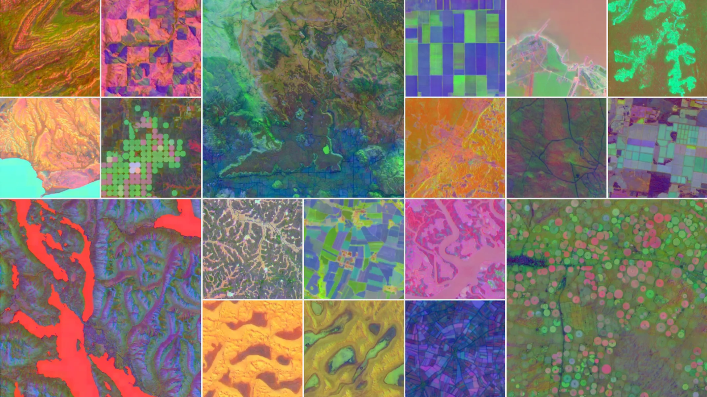

MSHA
Unsupervised Multi-Scale Scene Characterization and Change Detection in Remote Sensing Imagery, A Comparison with Alpha Embeddings
1 Project overview

MSHA - Multi-Scale-Spatial-Heterogeneity-Analysis is a programming-focused geospatial project that quantifies how homogeneous, complex, and spatially structured a remote-sensing scene is, without requiring land-cover labels or training data.
The project builds an unsupervised scene rating framework for Sentinel-2 image patches using multi-scale spatial metrics derived from NDVI. Crucially, it also investigates how scene heterogeneity and temporal change are captured differently by these hand-crafted spatial statistics versus by alpha embeddings, learned, data-driven latent representations extracted from a self-supervised encoder.
The Plan:
- take a remote-sensing tile across multiple timestamps
- divide it into windows
- compute local texture and spatial statistics
- aggregate them into scene-level scores
- rank scenes by homogeneity, complexity, and spatial organization
- extract alpha embeddings for each scene and patch
- compare how change and heterogeneity manifest in the metric space versus the embedding space
2 Question
Can remote-sensing scenes be automatically characterized and ranked using unsupervised multi-scale spatial metrics ; and does the structure of alpha embeddings agree with, complement, or contradict what those metrics reveal about heterogeneity and change over time?
3 Study data
3.1 Data source
Sentinel-2 Level-2A imagery.
Google Alpha Embeddings.
A practical dataset consists of:
- 4 to 6 scenes at the same or overlapping locations, across different timestamps
- each scene cropped to 512 × 512 pixels
- spatial resolution: 10 m
- metric analysis performed on NDVI; embedding extraction on the full or selected band stack
Including multi-temporal acquisitions of the same location allows change to be measured both via metric drift and via embedding distance.
No land-type labels are required.
4 Analytical framework
The analysis is performed at two parallel tracks:
4.1 Track A ; Metric-based (MSHA)
- Window level: compute local metrics inside windows
- Scene level: aggregate window metrics into scene descriptors
4.2 Track B ; Embedding-based (Alpha)
- Patch level: extract alpha embeddings for fixed-size patches using a pretrained self-supervised encoder
- Scene level: aggregate patch embeddings (e.g. mean pooling) into a scene-level descriptor vector
Both tracks operate without labels. The comparison focuses on which approach better separates scenes that differ in land-cover heterogeneity or have undergone temporal change.
4.3 Multi-scale windows
The same image is evaluated at multiple window sizes:
- 32 × 32
- 64 × 64
- 128 × 128
This allows the project to measure how scene structure changes with spatial support. Alpha embeddings are extracted at a fixed patch size (typically 64 × 64 or 128 × 128) matching the encoder’s expected input.
5 Core metrics
The project uses five main metrics.
5.1 1. Shannon entropy
Measures information richness or disorder.
\[ H = - \sum_i p_i \log(p_i) \]
Interpretation:
- low entropy = uniform scene
- high entropy = complex or irregular scene
5.2 2. Local variance
Measures variability inside each window.
\[ \sigma^2 = \frac{1}{N}\sum_i (x_i - \mu)^2 \]
Interpretation:
- low variance = homogeneous patch
- high variance = heterogeneous patch
5.3 3. Edge density
Computed from Sobel or Canny edges.
\[ ED = \frac{\text{number of edge pixels}}{\text{total number of pixels}} \]
Interpretation:
- low edge density = smooth scene
- high edge density = many boundaries or fragmented structure
5.4 4. GLCM homogeneity
A texture smoothness metric derived from the gray-level co-occurrence matrix.
Interpretation:
- high value = smooth texture
- low value = rough or heterogeneous texture
5.5 5. Moran’s I
Measures spatial autocorrelation.
\[ I = \frac{N}{W} \frac{\sum_i \sum_j w_{ij}(x_i-\bar{x})(x_j-\bar{x})} {\sum_i (x_i-\bar{x})^2} \]
Interpretation:
- high positive values = clustered, spatially organized patterns
- values near zero = random arrangement
6 Alpha embeddings
6.1 What are alpha embeddings?
Alpha embeddings are dense vector representations of image patches produced by a self-supervised or foundation-model encoder trained on large remote-sensing datasets (e.g. SatMAE, Scale-MAE, or a ViT pretrained via masked autoencoders). The encoder maps each patch into a high-dimensional latent space without any label supervision.
The key property is that patches with similar visual or spectral content are pulled close together in embedding space, while dissimilar patches are farther apart ; even without the model ever being told what land-cover type a patch belongs to.
6.2 Why compare with MSHA metrics?
MSHA metrics measure heterogeneity through explicit, interpretable statistics (entropy, texture, autocorrelation). Alpha embeddings capture heterogeneity implicitly through learned feature geometry. The two approaches may:
- agree in high-change or clearly heterogeneous scenes ; validating both methods
- diverge in ambiguous scenes ; revealing what each approach is sensitive to
- show complementary sensitivity ; motivating a fusion of metrics and embeddings
6.3 Embedding extraction
For each patch:
- Resize or crop to the encoder’s expected input size
- Pass through the pretrained encoder
- Extract the
[CLS]token or mean-pooled feature vector as the embedding \(\alpha \in \mathbb{R}^d\)
6.4 Change detection via embedding distance
For a scene observed at two timestamps \(t_1\) and \(t_2\), the change signal for a patch can be estimated as:
\[ \Delta\alpha = \|\alpha_{t_2} - \alpha_{t_1}\|_2 \]
A high \(\Delta\alpha\) indicates that the patch’s visual content has shifted significantly in the latent space ; a proxy for land-cover or structural change.
This is compared directly against the metric-based change signal:
\[ \Delta M = \|M_{t_2} - M_{t_1}\| \]
where \(M\) is the vector of MSHA metrics (entropy, variance, edge density, etc.) for the same patch.
7 Composite indices
The raw metrics are standardized using z-scores:
\[ z = \frac{x - \mu}{\sigma} \]
7.1 Homogeneity Index (HI)
A higher value indicates a more uniform scene.
\[ HI = z(\text{GLCM Homogeneity}) - z(\text{Entropy}) - z(\text{Variance}) - z(\text{Edge Density}) \]
7.2 Complexity Index (CI)
A higher value indicates a more textured and fragmented scene.
\[ CI = z(\text{Entropy}) + z(\text{Variance}) + z(\text{Edge Density}) \]
7.3 Spatial Structure Index (SSI)
A higher value indicates stronger spatial organization.
\[ SSI = z(\text{Moran's I}) + z(\text{GLCM Homogeneity}) \]
7.4 Embedding-based heterogeneity score
For a scene, the spread of patch embeddings within the scene is used as an embedding-derived heterogeneity score:
\[ EHS = \frac{1}{P} \sum_{p=1}^{P} \|\alpha_p - \bar{\alpha}\|_2 \]
where \(P\) is the number of patches and \(\bar{\alpha}\) is the mean scene embedding. A higher EHS indicates that patches within the scene occupy diverse regions of the latent space ; analogous to a high CI.
8 Expected outputs
8.1 Output 1 ; Scene ranking table
A table comparing metric-based and embedding-based characterization side by side:
| Scene | Timestamp | Mean Entropy | Mean Variance | Mean Edge Density | Mean Moran’s I | HI | CI | SSI | SIS | EHS | \(\Delta\alpha\) |
|---|
8.2 Output 2 ; Patch-level homogeneity maps
Maps showing where homogeneous and heterogeneous regions occur within a scene, derived from MSHA metrics.
8.3 Output 3 ; Complexity maps
Window-based maps of CI values, with embedding-distance overlay for comparison.
8.4 Output 4 ; PCA / UMAP plot of scenes
Dimensionality reduction applied to both scene-level metric vectors and scene-level alpha embeddings in the same figure, to visualize whether the two representations cluster scenes similarly.
8.5 Output 5 ; Multi-scale comparison plot
A figure showing how scene metrics change across 32, 64, and 128 pixel windows.
8.6 Output 6 ; Change detection comparison map
Side-by-side spatial maps of \(\Delta M\) (metric-based change) and \(\Delta\alpha\) (embedding-based change) for multi-temporal scene pairs, highlighting areas of agreement and disagreement.
8.7 Output 7 ; Metric vs. embedding correlation plot
Scatter plots of CI vs. EHS and \(\Delta M\) vs. \(\Delta\alpha\) across all patches and scenes, with Pearson/Spearman correlation reported. This directly quantifies how well the two paradigms agree in capturing heterogeneity and change.
9 Stack
Language: Python
Libraries: numpy, pandas, rasterio, matplotlib, skimage, sklearn, torch, timm, umap-learn
torchandtimmare required for loading pretrained encoders and extracting alpha embeddings.umap-learnis used for embedding-space visualization alongside PCA.